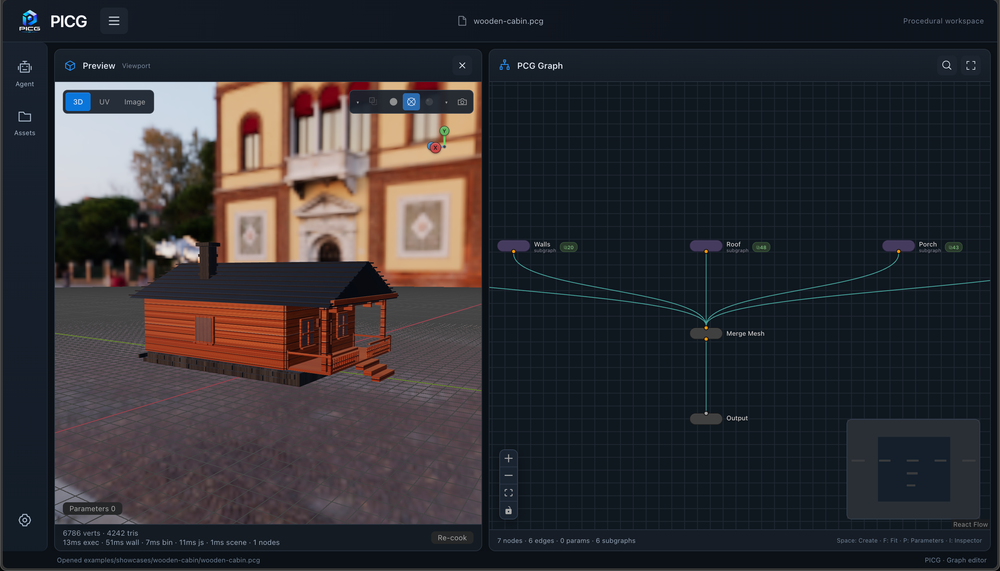
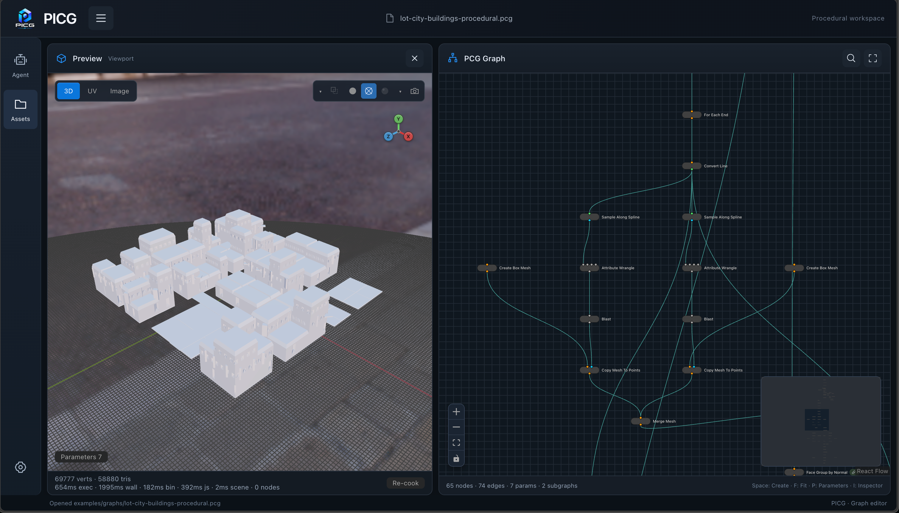
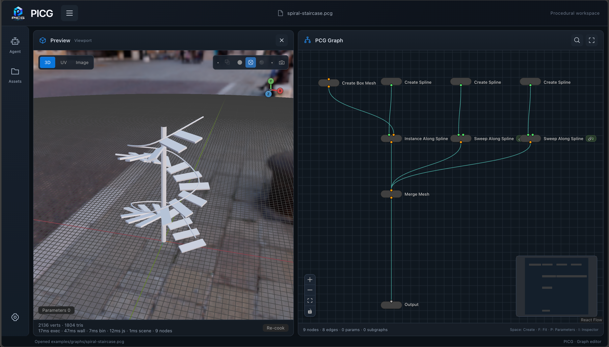
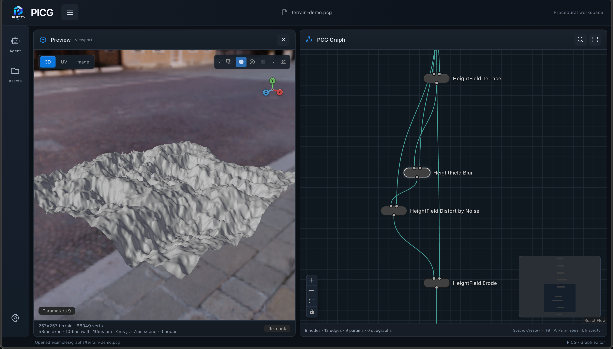

MODULAR BUILDINGS
Wooden cabin
Wall, roof and porch subgraphs assemble into a building.
View cabin graphPROCEDURAL INTELLIGENT CONTENT GENERATION
PICG is a procedural asset toolkit with a visual Web editor, a native C++ runtime and Unity integration. Author the graph yourself or let an AI client edit it through MCP. The .pcg file stays yours to inspect, change and run again.

HOW IT WORKS
Keep the construction rules, not just the resulting mesh.
Wire nodes visually, open an example, or connect an external AI client to edit the same graph through the local MCP server.
Run the graph with the C++ core, then inspect the result in the Three.js preview. Change a parameter or seed and cook it again.
Export GLB from the Web editor or work with graph assets, materials, terrain and splines in Unity.
pcg-server sidecar. Unreal, Blender, Godot and a standalone Three.js runtime are planned, not available integrations. Read the roadmap.GRAPH LIBRARY
Each example has an editable graph and a capture from the Web editor.

MODULAR BUILDINGS
Wall, roof and porch subgraphs assemble into a building.
View cabin graph
SPLINES & INSTANCING
Build around a spline with sweep and instancing operations.
View staircase graph
LOCAL QUICKSTART
Start from source. You’ll need Node.js 20.19+ in the 20.x line or Node.js 22.12+, CMake 3.20+, and a C++17 compiler. On Linux, install libcurl development files if needed.
The editor and native server both run on your machine. After starting them, open the local bridge example. If it can’t connect, check the server health endpoint.
# Terminal 1 · clone and start the server
git clone --recurse-submodules https://github.com/DJ-Huang/PCG-AI.git
cd PCG-AI
.\scripts\build-pcg-server.ps1 -Run
# Terminal 2 · from the same repository
cd web\pcg-editor
npm ci
npm run devgit clone --recurse-submodules https://github.com/DJ-Huang/PCG-AI.git
cd PCG-AI
./scripts/run-pcg-web.sh